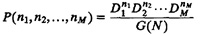
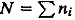
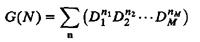
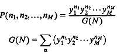
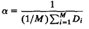
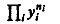

| Previous | Table of Contents | Next |
Technology is dominated by two types of people: those who understand what they do not manage and those who manage what they do not understand.
—Archibald Putt
The mean-value analysis presented in Section 34.2 provides a simple algorithm for finding the average queue lengths and response times of various devices in computer systems. Although the average values are sufficient in many cases, sometimes one may want to find more detailed information, such as the distribution or variance of queue lengths and response times. For example, in a two-disk computer system, one may want to know what the probability is of both disks being busy at the same time or what the probability is of having more than five jobs at a disk. Such questions, which cannot be answered using MVA, can be answered using the convolution algorithm presented in this chapter. Although, historically, the convolution algorithm was discovered before MVA, in this book we present it after MVA since it is more complex and needs to be used only if MVA cannot provide the desired answer.
The equations used in convolution algorithm are explained in two steps. Initially, all service centers in the closed queueing network are assumed to be load independent, that is, the service time per job does not depend upon the queue length. Thus, terminals are not allowed initially. They are considered in Section 35.4. For extensions to general load–dependent service centers, see Buzen (1973).
At any instant, the state of such a network is given by the number of jobs at various devices and is represented by the vector n = {n1,n2,...,nM}. Here, ni is the number of jobs at the ith device. Gordon and Newell (1967) showed that the probability of the system being in state n is
|  | (35.1) |
Here, Di is the total service demand per job for the ith device,  is the total number of jobs in the system, and G(N) is a normalizing constant such that the probabilities for all states add to 1:
|  | (35.2) |
One of the problems with this formula is that the value of G(N) may become too large and may exceed the floating–point range of some computer systems. In some cases, it may become too small near the lower end of the floating–point range, causing significant errors in computation. Such overflow and underflow problems can be avoided by scaling all service demands Di by a suitable constant α before computing G(N). Let yi = αDi be the scaled service demand for the ith device. Then, Equations (35.1) and (35.2) become

When selecting scaling factors, the scaled values should neither be too large nor too small compared to 1. One such choice would be

In any case, the choice of a should not affect the probabilities. The following example illustrates the use of α.
Example 35.1 Consider a batch computer system consisting of a processor and two disks. It can be represented by the closed central server model shown in Figure 32.2.
The service times are 39 milliseconds per visit to CPU, 180 milliseconds per visit to disk A, and 260 milliseconds per visit to disk B. Each batch job makes 13 I/O requests to disk A and 6 I/O requests to the disk B. We would like to compute the state probabilities when the multiprogramming level is 3:
TABLE 35.1 Computing System State Probabilities Using Gordon and Newell’s Method
Number of Jobs at
Numerator, CPU Disk A Disk B Probability
0 0 3 8 0.089 0 1 2 12 0.133 0 2 1 18 0.200 0 3 0 27 0.300 1 0 2 4 0.044 1 1 1 6 0.067 1 2 0 9 0.100 2 0 1 2 0.022 2 1 0 3 0.033 3 0 0 1
G(N) = 900.011
1.000
- Service times: SCPU = 0.039, SA = 0.18, SB = 0.26
- Visit ratios: VCPU = 13 + 6 + 1 = 20, VA = 13, VB = 6
Total service demands are
DCPU = 20× 0.039 = 0.78
DA = 13× 0.18 = 2.34
DB = 6× 0.26 = 1.56
For the scaling factor, we arbitrarily choose α = 1/0.78. This results in yCPU = 1, yA = 3, and yB = 2.
The system can be in any of the 10 states. These states and their probabilities are shown in Table 35.1. For each state, we first determine the product , add all the products to find G(N), and divide each individual product by G(N) to get the desired probability.
| Previous | Table of Contents | Next |